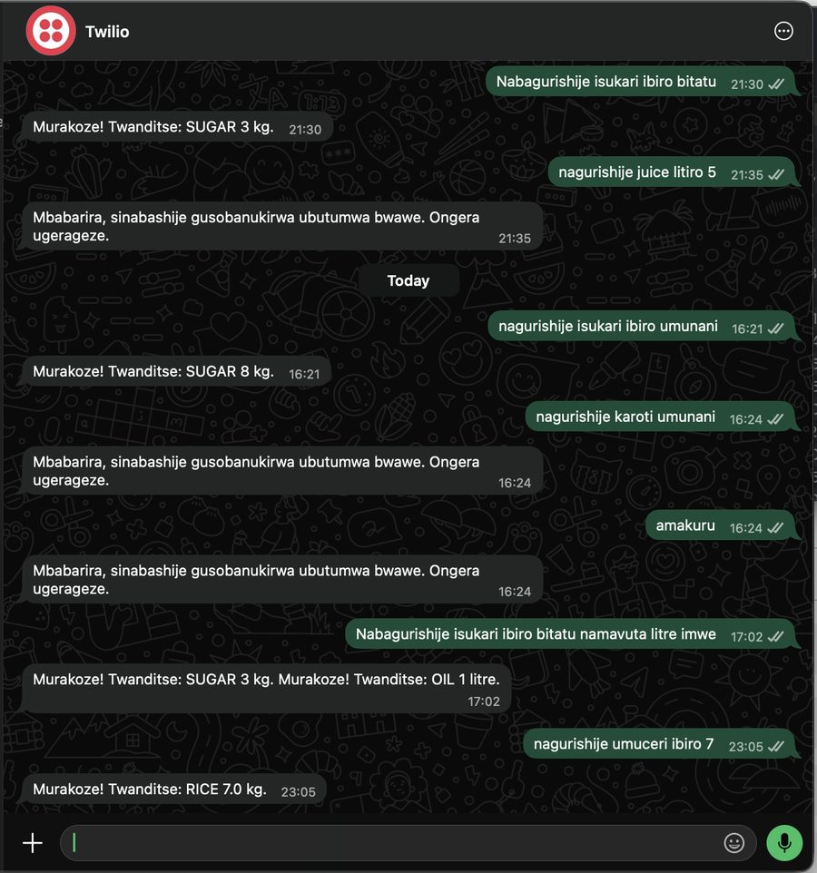
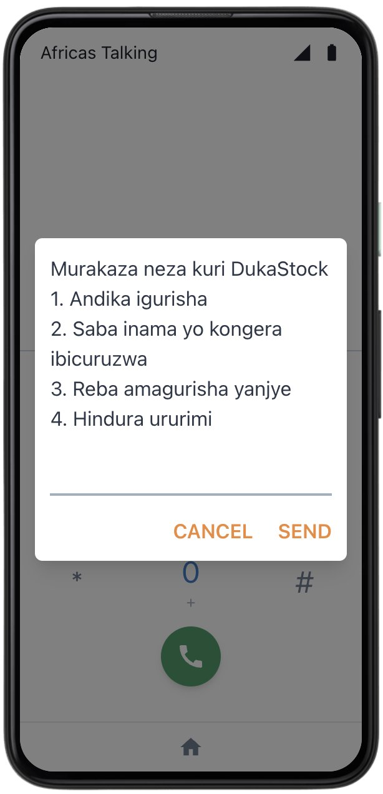
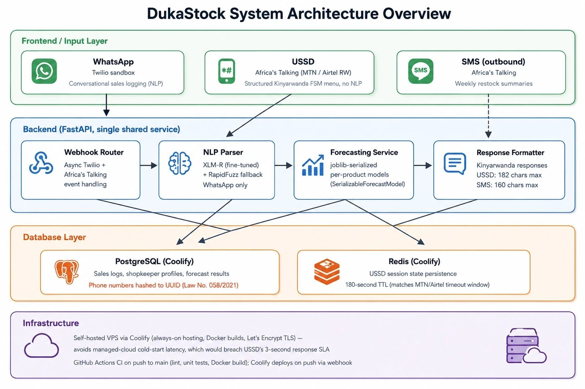
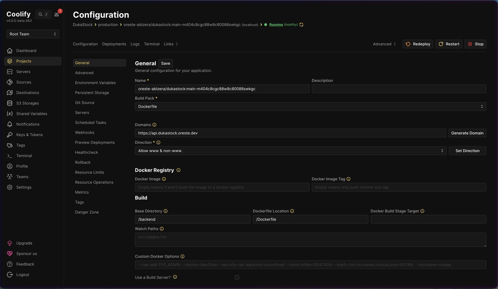
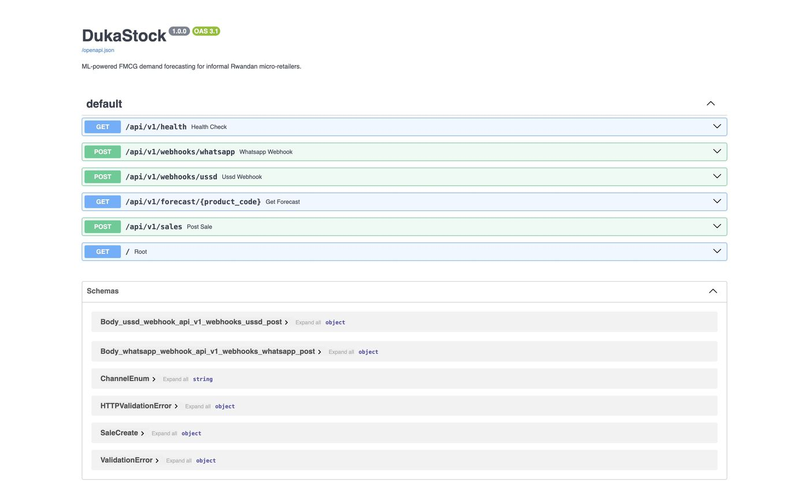

DukaStock is an AI system that reads free-text Kinyarwanda and English sales messages over WhatsApp, USSD, and SMS, and turns them into structured sales records for Rwanda's Duka shops.
The sales ledger that understands Kinyarwanda.
A shopkeeper texts what she sold, the way she'd text a friend. DukaStock reads it in Kinyarwanda, English, or both mixed together, and logs the sale. No form. No app to learn. No smartphone required.
The problem
Rwanda's informal Duka shops make up most of retail, and almost none of them keep digital sales records. Every demand-forecasting method in the research literature assumes years of clean transaction history. That assumption quietly falls apart here, because the sale was never recorded to begin with.
It also assumes a smartphone. 85% of Rwandan households own a mobile phone, but only 34% own a smartphone (NISR EICV7, 2023/24). A WhatsApp-only tool would exclude most of the people it's meant to serve.
How it works
- 1She sends a message. Over WhatsApp if she has a smartphone, over USSD by dialling a code on any phone, or SMS for a lightweight nudge, in Kinyarwanda, English, or a natural mix of both.
- 2A fine-tuned language model reads it. A cross-lingual model (XLM-R), fine-tuned specifically on real Duka-shop commerce messages, extracts the product, quantity, and unit. If it isn't confident, the system falls back to a conservative rule-based match instead of guessing.
- 3The sale is logged, instantly. She gets a confirmation back in the same channel she used, and the structured record is saved. No typing into a spreadsheet, no separate app.
See it live
This is a real conversation from DukaStock's production system. One message, two products. "Nabagurishije isukari ibiro bitatu namavuta litre imwe" (I sold three kilos of sugar and one litre of cooking oil) is split correctly into SUGAR, 3 kg and OIL, 1 litre, understood instantly.


Built for every phone, not just the smartphone
34% smartphone. Roughly 51% feature-phone-only. About 15% no phone access at all. The same fine-tuned pipeline that powers WhatsApp runs behind USSD too, with zero changes to the model, reaching the majority of households a WhatsApp-only design would leave out.
The numbers, not just the pitch
Evaluated against a rule-based baseline (RapidFuzz) on the same held-out, real, annotated test set. The test set's own reliability was independently checked before either number was trusted.
XLM-R (fine-tuned)
RapidFuzz (baseline)
RapidFuzz's 1.000 precision doesn't mean it's a strong model. It means every guess it made happened to be correct. Its recall, 0.378, is the honest number: it misses most entities because it can only ever return one product per message.
Under the hood
One FastAPI backend serves both channels. WhatsApp arrives via Twilio; USSD and SMS arrive via Africa's Talking, since Africa's Talking doesn't offer WhatsApp in Rwanda. Every request is routed through the same backend, which hashes phone numbers on arrival, keeps session state in Redis, and stores sales in Postgres, then hands off to the same NLP pipeline: fine-tuned XLM-R first, with RapidFuzz as a conservative fallback whenever the model isn't confident enough.

Verified live, not just demoed locally
The deployment status, the API documentation, and the annotation progress below are real, current screenshots of the running system, not mockups.


Built as honest research, not just a product pitch
This is a capstone research project from African Leadership University, reviewed and approved by the ALU Research Ethics Committee before any shopkeeper message was collected. Phone numbers are hashed at ingestion under Rwanda's Law No. 058/2021 and never stored in plaintext.
It's also reported honestly, not just optimistically: the evaluation set is small (37 messages), a usability study with real shopkeepers hasn't been run yet, and the model's accuracy on phrasing outside its training data is untested. None of that changes the core result. It just marks where the evidence currently ends.